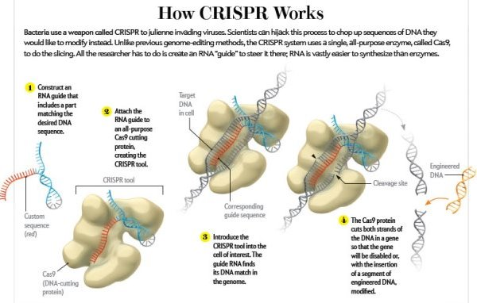

2015-08-26 15:06:00
上一篇文章提到人類基因組解碼十多年來，基本上對醫療沒有什麼貢獻，這主要有兩個原因：首先，如果要進行基因療法（Gene Therapy），就必須有可靠、廉價、高速的手段對活細胞的基因做重組，很不幸的，早期的嘗試（主要是使用改造過的病毒）不但複雜而昂貴，而且非常不精確，常常在錯誤的染色體位置上做意外的修改，其結果是不但沒有治好這些遺傳性的基因病變，反而引發急性的癌症腫瘤，在有志願者因此而死亡之後，研究的腳步就更加緩慢困難。另一方面，如果不是直接改變病人的基因，而是要開發新藥，那麼就必須在細胞依據DNA的藍圖製造RNA然後再製造蛋白質等等機制中找尋機會，但是蛋白質千變萬化，其作用又主要靠分子折迭（Folding）後的三維形狀來決定，所以只從分析DNA而決定蛋白質分子的分子式是遠遠不夠的，必須能確定它們在活細胞環境內如何自我折迭，但是這個問題連超級電腦都不能可靠解決，最終還是必須有直接測量的手段，而在人類基因組解碼後，研究人員仍然沒有一個很好的直接測量蛋白質形狀的技術，所以也就不能促成開發新藥的革命。
在學術界內研究DNA的叫做基因工程（Genetic Engineering），研究蛋白質的則是分子生物學（Molecular Biology）的一支。在基因解碼越來越快越便宜之後，研究人員開始集中力量要突破前面提到的兩個制約因素，在最近幾年終於先後得到了好的解決方案。目前我們正處在改進和推廣這些新技術的階段，在未來15-20年將是一個革命性的黃金時期（上一次有這種規模的醫療革命是抗生素的發現和普及），目前困擾人類最嚴重的許多病變如癌症、Alzheimer's、Aids等將逐步被征服，下一代人的生活品質將因此而大幅提高，實在是件震撼全球的大事。我將在本文介紹基因工程方面的突破，在下一篇文章再討論分子生物學的新研究工具。
2012年新發現的基因編輯（Gene Editing）技術叫做CRISPR（Clustered Regularly Interspaced Short Palindromic Repeat）。它原本是某些細菌用來消滅入侵的病毒基因的一個天然手段，由一個RNA和一個特別的蛋白質Cas9組合而成。 RNA負責識別病毒基因，一旦找到正確的對象就自然接合起來，然後附帶的Cas9像剪刀一樣把目標DNA切斷。一開始研究人員只是用它來對特定基因做消音（Silencing），但是很快地就有人發現只要有合適的新DNA段落在附近，有時細胞修復DNA時會把新段落加進去，如此一來就達到了基因編輯的目的。
和以往的舊技術相比，CRISPR的特點在於它基本上是同一組分子，只有RNA的識別段（圖中紅色段落）需要量身訂製；這不但使製造過程加速了不只一個數量級，而且也大幅減少錯誤，不過目前的技術還做不到100%精確。
CRISPR發現後不到一年，美國就開了好幾個新創業公司（Startups），準備用它來做基因療法。這些人或許是操之過急了點，畢竟CRISPR才剛被發現，技術很不成熟，尤其是新DNA段落的融入基本上仍是靠運氣，所以不是100%的細胞都會被正確處理。更嚴重的是目前的RNA識別段都還不夠可靠，雖然已經比上一代技術好太多了，但是即使是少數的錯認仍然有可能會引起癌症，所以CRISPR還有很大的改進空間。
2015年四月，廣東中山大學的黃軍就教授發表了一篇有關CRISPR的論文，引發了科學界的廣泛注意和討論。他使用CRISPR對剛受孕後的單細胞人類胚胎嘗試了基因改造，結論是只有52%（54個胚胎，28個成功）的成功率。不過震驚歐美科學界的不是他的研究結果，而是他的研究對象。胚胎細胞屬於所謂的Germline，也就是修改過的基因是會被傳到下一代的，而目前由基督教主導的歐美社會還不能接受研究人員扮演上帝的角色。我個人認為這是落伍的觀念，Germline Modification必須被規範，但是不可能被永遠禁止。
事實上對胚胎細胞使用CRISPR，比對整個活體進行基因療法要容易多了。這是因為失敗的個例可以被丟棄，所以目前的不成熟技術其實已經可以在胚胎方面實用。不過由於“道德”上的考慮，應該不會很快發生；我們大概還是要等上相當的時間（15年？），CRISPR的錯誤率被壓到極小的可接受程度，才會看到大規模的醫學應用。至於與醫療無關的應用則會快得多，例如我們可以預期各式各樣的轉基因作物將會有爆炸性的發展；當然在這方面，政府的法律規範也必須加緊腳步，才能跟上技術的進步，確保他們的安全應用，避免意外的災難。 After All，With Great Power，Comes Great Responsibility。
【後註一】今天（2016年九月22日）消息傳出，Monsanto正式簽約與Broad Institute合作，將利用CRISPR技術來開發新農業品種。早在今年四月，Dupont已經與Caribou Bioscience簽了類似的合約。
【後註二】今天（2018年三月27日），Monsanto買下了Pairwise的部分股權，計劃在五到十年内，推出用CRISPR創造出的新水果，第一個產品可能是基於草莓。